Windows Live Writer で“はてなブログ”を書いてみた
公開日：
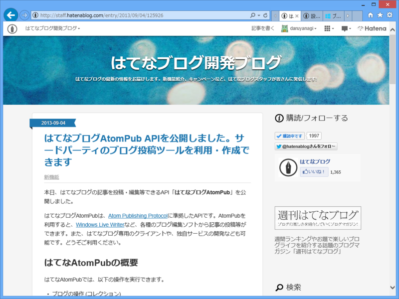
本日、はてなブログの記事を投稿・編集等できるAPI「はてなブログAtomPub」を公開しました。
はてなブログAtomPubは、Atom Publishing Protocolに準拠したAPIです。AtomPubを利用すると、Windows Live Writerなど、各種のブログ編集ソフトから記事の投稿等ができます。また、はてなブログ専用のクライアントや、独自サービスの開発なども可能です。どうぞご利用ください。
はてなブログAtomPub APIを公開しました。サードパーティのブログ投稿ツールを利用・作成できます - はてなブログ開発ブログ
最近やる気満々やな！ ありがとねっ！（北上さん風に
「Windows Live Writer」もサポートされているみたいなので、さっそく AtomPub を叩いてブログを書いてみましょう。それにしても「Windows Live Writer」使うの久しぶりだわ。先代のブログは WordPress で構築していたので、「Windows Live Writer」にはだいぶお世話になったのだけど。実はいくつかプラグインも作っているぐらい、昔は好きだったんだけどね*1。
ダウンロードとインストール
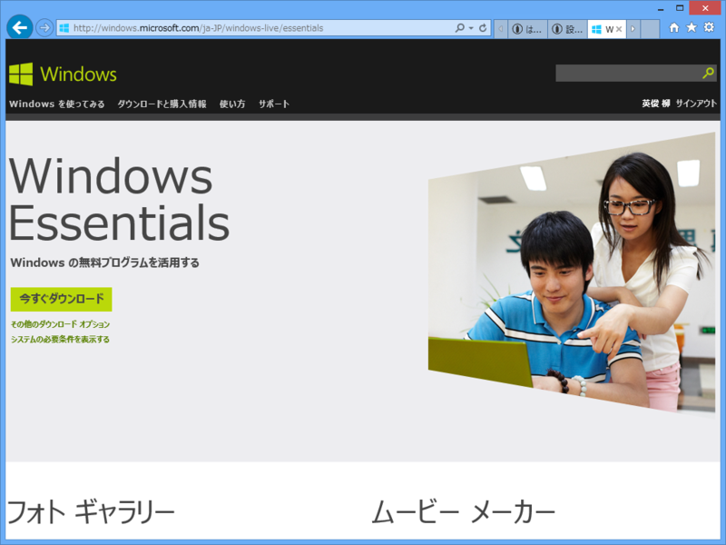
「Windows Live Writer」はソフトウェアパッケージ「Windows Essentials」の一部として配布されています。
こいつを使うと、（今は亡き）“Windows Live”ブランドのアプリがインストール可能。
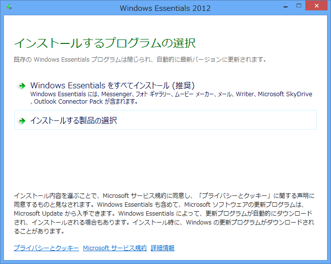
よくわかんなかったら推奨設定でいい。
ブログアカウントのセットアップ
初回利用時にブログアカウントのセットアップを行う。
今回はウチのテストブログで説明する。
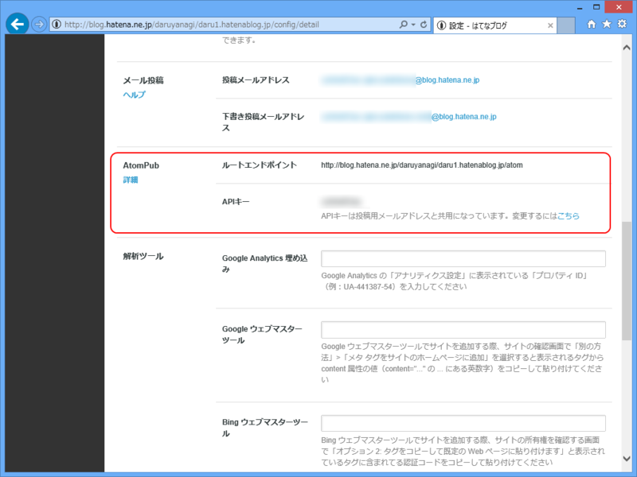
ログイン - はてな であらかじめ
- ルートエンドポイント
- APIキー
をメモしておくといいよ。
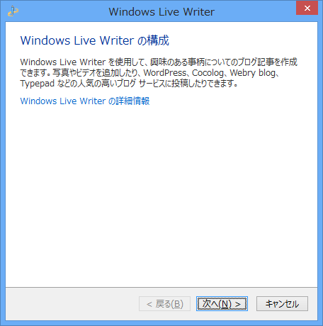
［次へ］。
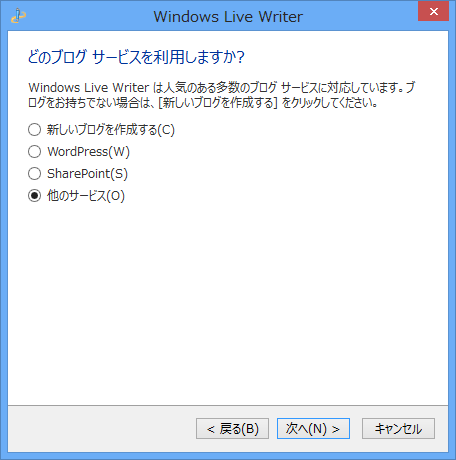
一番下の［他のサービス］を選択して［次へ］。
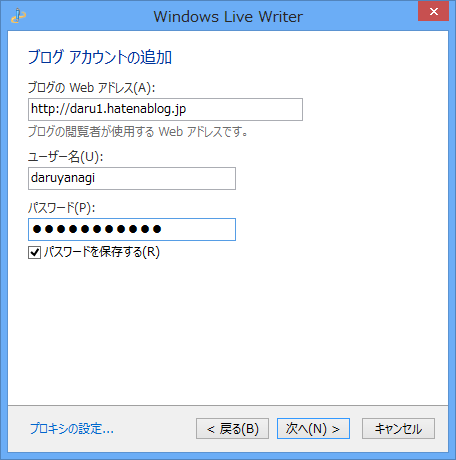
上から順に
- ブログのURL（http://daru1.hatenablog.jp/）
- はてな ID（daruyanagi）
- APIキー
を入力して［次へ］。
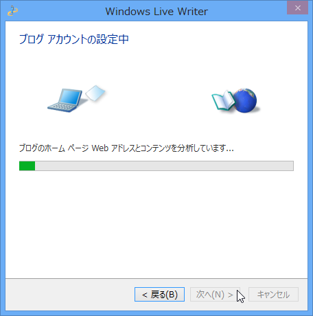
すると、ブログ投稿用の API （AtomPub 以外にもいろいろある）を自動判別しようとするが……
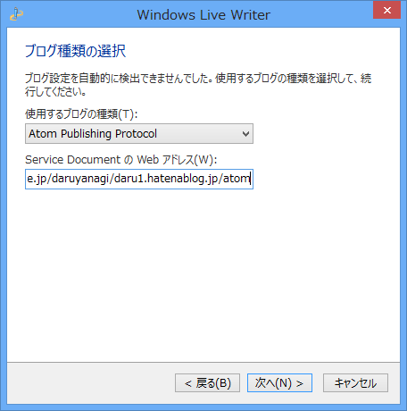
失敗するので手動で設定。上のプルダウンリストで“Atom Publishing Protocol”を選択し、下のテキストボックスにルートエンドポイントを入力する。［次へ］。
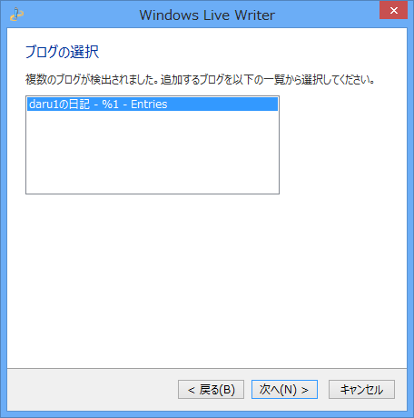
すると今度はちゃんと検出される。なんかブログ名がおかしいけど気にしない。［次へ］。
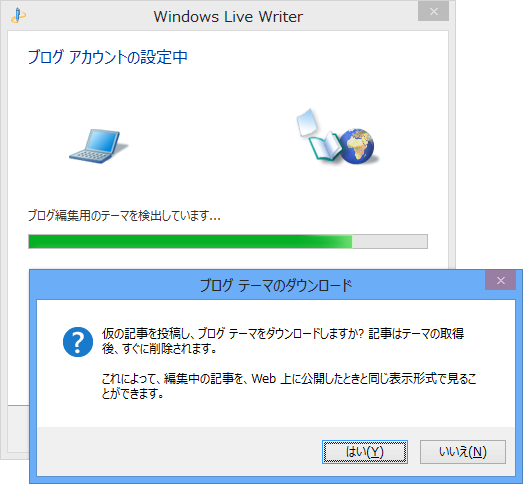
もろもろの最終チェック。ウチの環境ではテーマのダウンロードに失敗するので、テーマの自動検出はスキップ。
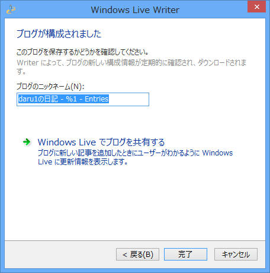
設定終了。［Windows Live でブログを共有する］ボタンは、肝心の“Windows Live”が終了しているので意味はない。「Windows Live Writer」は最近メンテナンスされていないので、こういう時代遅れな機能がいろいろ残っていたりする。
とりあえず書いてみる
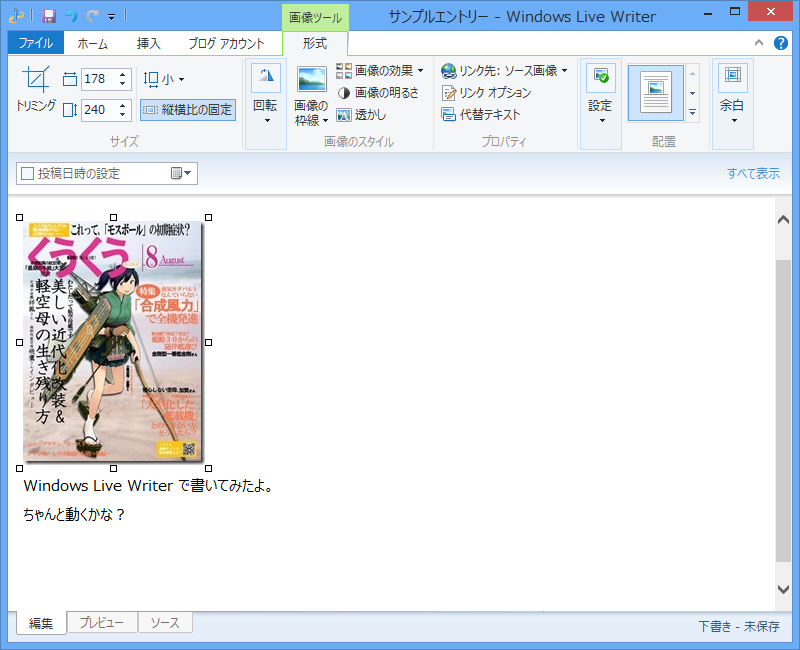
適当に書いてみる……が。
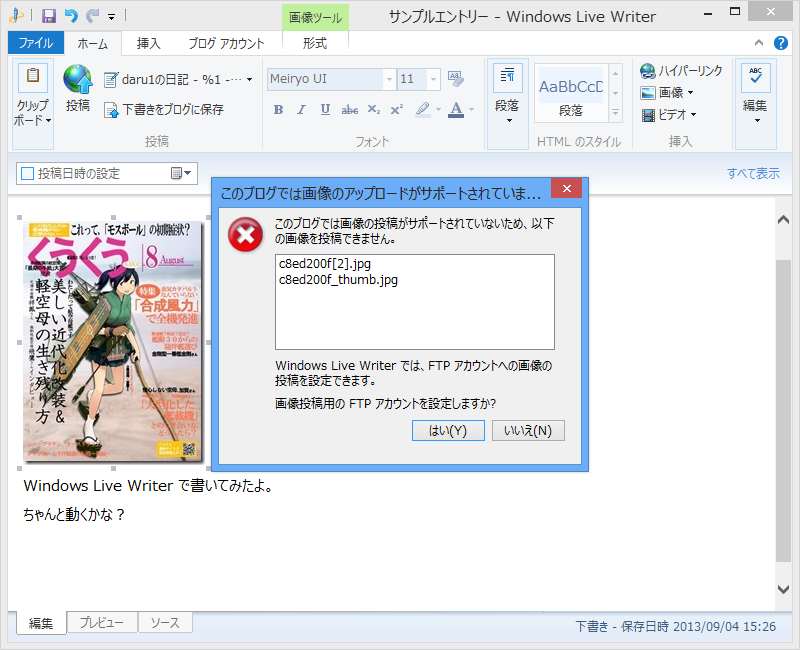
画像のアップロードには対応していない。もし公開 FTP サーバーをもっているなら、そこへアップロードするようにセットアップすることもできる。
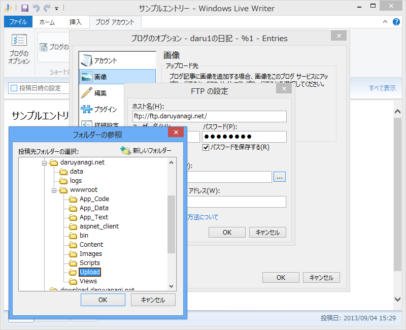
自前の FTP にアップロードして、ブログ記事からそれを参照するってわけだね。
あと、ブログを投稿したあとにブラウザーでプレビューを開くと……
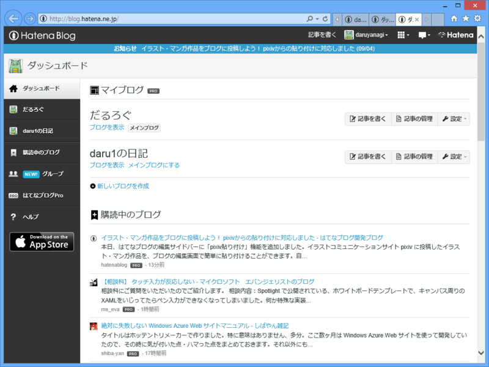
ダッシュボードが開いてしまう。設定を間違ったのかなぁと思ったのだけど、アカウントのセットアップ時に正しくブログの URL を指定しても、AtomPub を検出するときにそれがダッシュボードの URL に書き換えられてしまうので、これは仕様としてあきらめるしかないみたい。
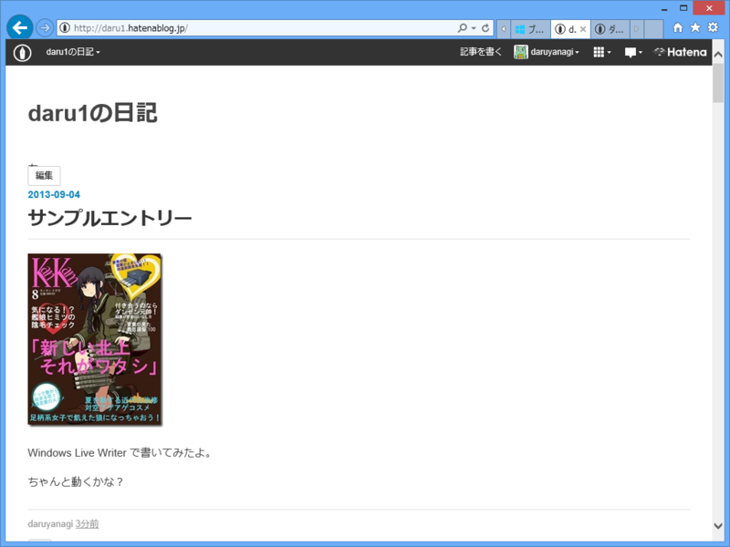
プレビューエンジンも公開してもらえれば、Windows 8 や Windows Phone 向けのクライアントもだれか作ってくれるかも。
*1:ソースコード残ってたら再公開してみようっかな